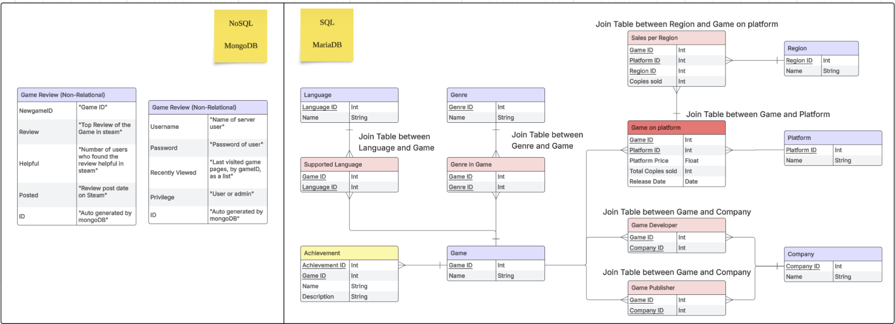

GameHub Database System
A Year 1, Trimester 3 Database Systems project completed in 2025 by a team of six students, combining MariaDB and MongoDB in a Flask-based web application that centralized game, sales, platform, achievement, and review data for game developers.

This project was built for INF2003 Database Systems and was framed as a database application for game developers. The goal was to centralize fragmented information such as game metadata, platform details, regional sales, and player reviews so that developers could study trends and make better design or publishing decisions from one place.
The final application used a dual-database setup. MariaDB handled the structured relational side, including games, platforms, companies, genres, languages, achievements, and sales by region. MongoDB handled the less structured review and user-side data, which made sense for document-style review content, recent views, and privilege metadata. The system itself was built around Flask, SQLAlchemy, PyMongo, and JavaScript.
Functionally, the project covered admin-controlled CRUD workflows, filtered browsing, game detail and sales pages, review upload and deletion by CSV, recently viewed pages, charts for sales analytics, and a range of advanced features such as AJAX loading, cross-database operations, and backend access control.
Application concept
- Designed the application around the problem of fragmented game market data spread across multiple sources and platforms.
- Used game profiles, video game sales, and review datasets, scaled down and cleaned for the project environment.
- Positioned the system as a developer-facing tool for trend analysis, game comparison, and more informed decision-making.
Database design
- Used MariaDB for the normalized relational side covering games, companies, genres, languages, platforms, achievements, and regional sales.
- Used MongoDB for reviews and user metadata because the data was more variable, document-like, and less suited to a rigid schema.
- Built many-to-many relationships through join tables such as supported languages, genres in game, game on platform, game developer, game publisher, and sales per region.
Implemented features
- Supported login, signup, logout, and admin privilege enforcement, with backend checks to prevent unauthorized CRUD access.
- Included game listing and filtering, detailed game pages, achievements, reviews, recently viewed pages, and sales-detail pages with charts.
- Handled CSV upload for games and reviews, dynamic dropdown behaviour, AJAX-driven data loading, multi-table queries, and cross-database operations.
My contribution
- Focused primarily on the SQL side, where I worked on creating new gaming platforms and linking them to existing games.
- Worked with relational tables and SQL queries for data handling rather than treating the feature as only a frontend form flow.
- Also contributed on the MongoDB side through data-cleaning work so the review data could be formatted and integrated properly.
Technical learning
- The project forced us to think about how SQL and NoSQL fit different data shapes instead of picking one database style by default.
- It also highlighted the practical difficulty of cleaning datasets, standardizing entries, and keeping consistency across a dual-database architecture.
- From the report, one of the main tradeoffs was that the local dual-database setup worked for the project scope but did not provide full cross-data transactions or production-grade security.
Tools and concepts
Project material
The write-up and gallery on this page are based on the submitted progress report and its appendix visuals.